Astrology
Le blog des signes astrologiques
Le projet se présente sous la forme d'un site internet. Le projet vise à instruire les clients sur l'astrologie, la signification de leur signe (c'est à dire une analyse de la personnalité et des points communs entre chaque personne possédant ce signe), la signification de leurs planètes (mars mercure vénus) ainsi que tout ce qui concerne les pierres précieuses de naissance.
Accroche et mot-clés
Découvrez la signification de votre signe astrologique et des planètes qui vous ont été attribués à la naissance
Mots clés : astrologie, astrologique, zodiaque, planète, constellation, étoile
Zoning du site
Références
La page d'accueil : Evozen
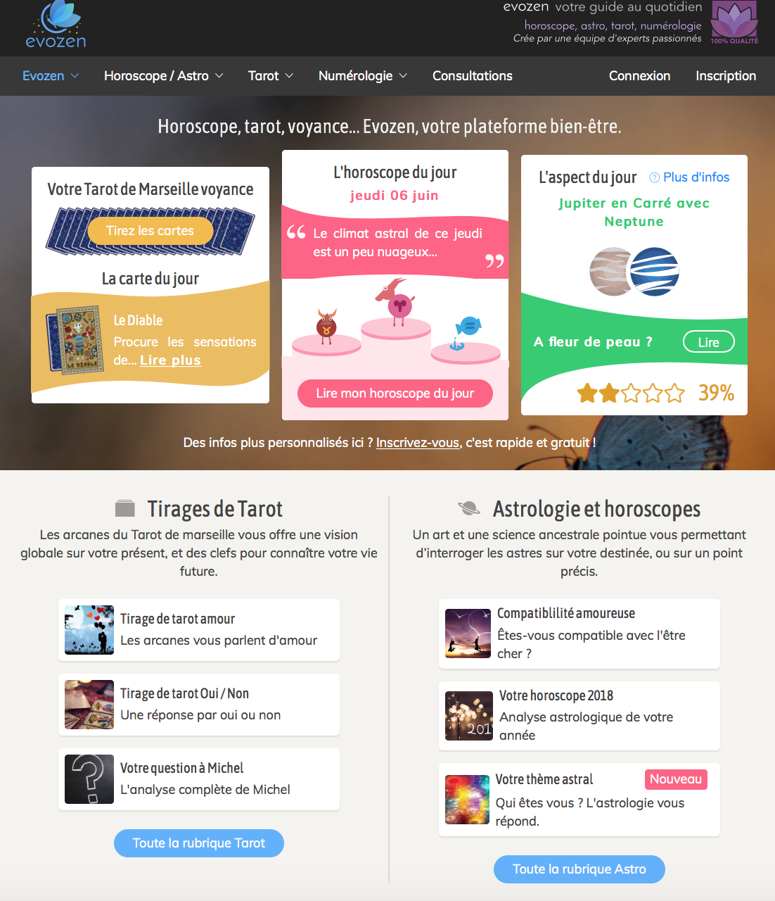La page d'accueil : Evozen
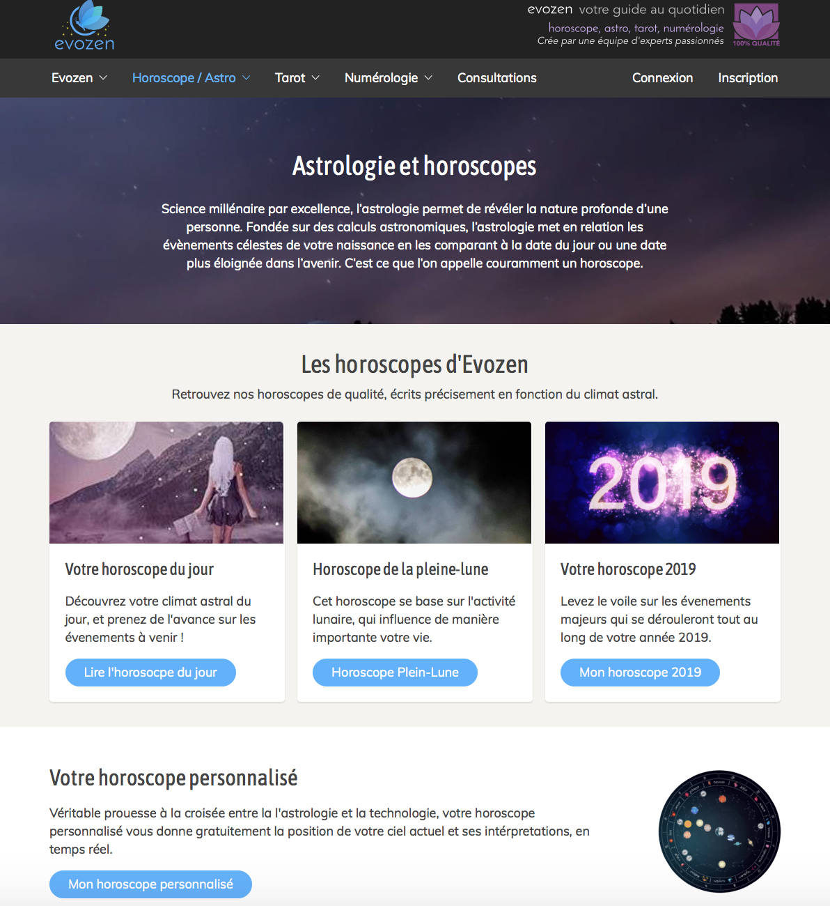La page d'accueil : Evozen
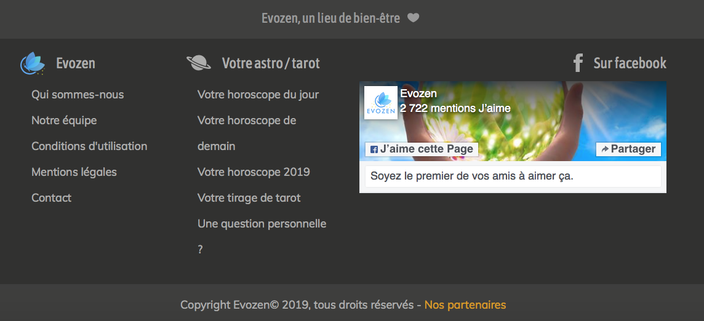Evozen est un site sur l'astrologie, les horoscopes et le tarot. C'est un site avec un concept proche du mien dont je me suis beaucoup inspirée au niveau des éléments et la structure du site.
J'ai fini par adopter une structure plus simple et moins surchargée, mais qui garde l'idée du header et des 3 articles.
La page d'articles : Blog du MMI
Screenshots site web
La page d'accueil

La page d'accueil
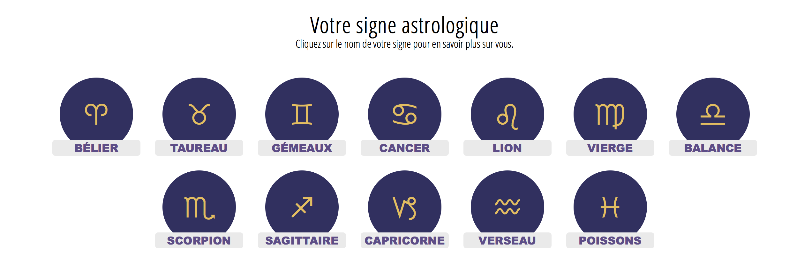La page d'accueil
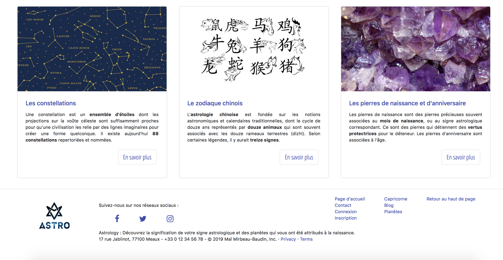Page Capricorne
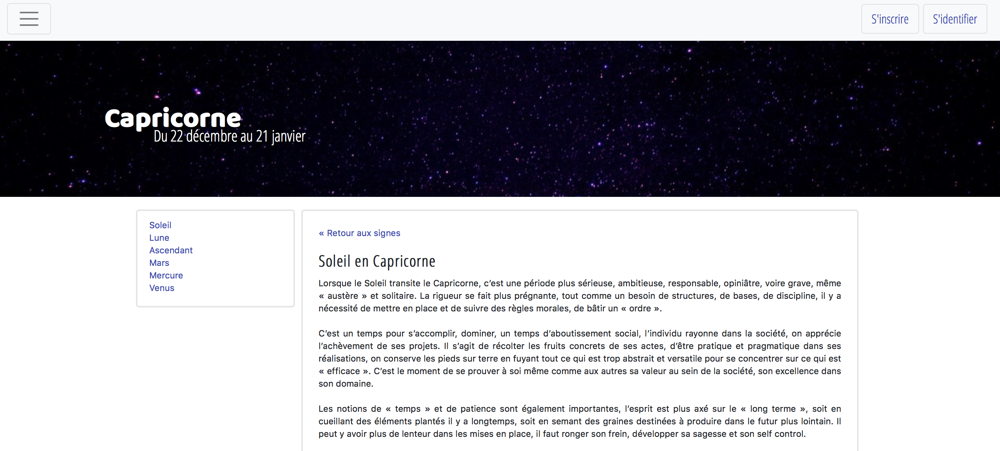Page Capricorne
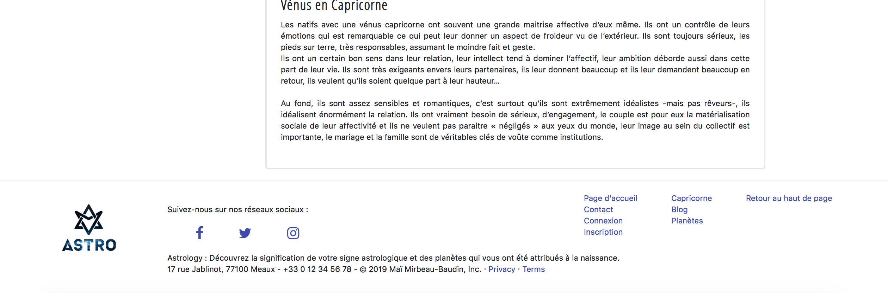Contact
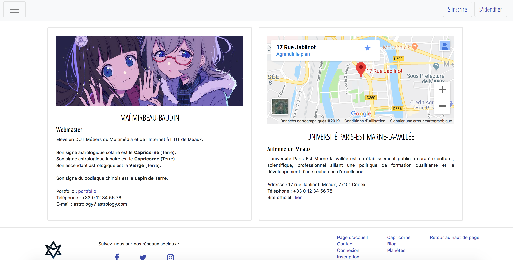Inscription
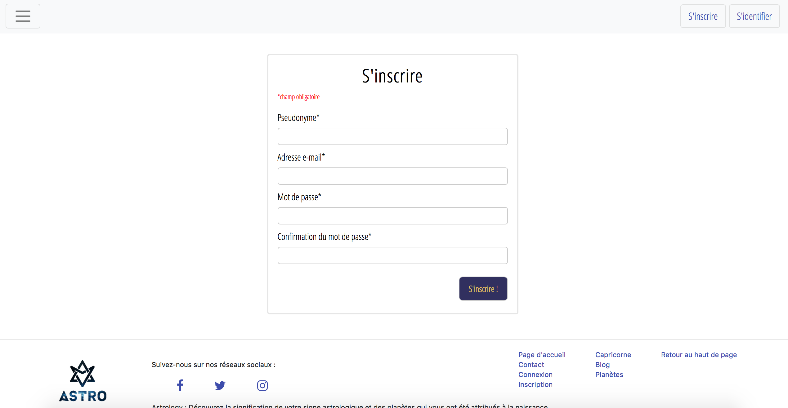Connexion
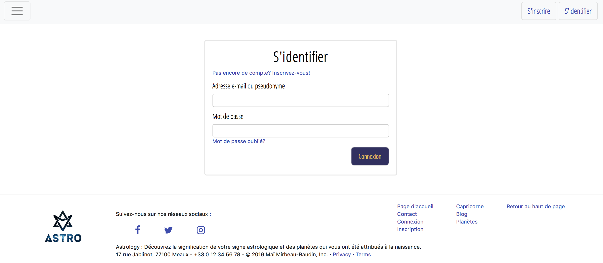Blog
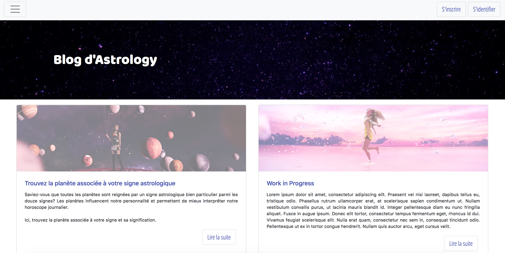Article
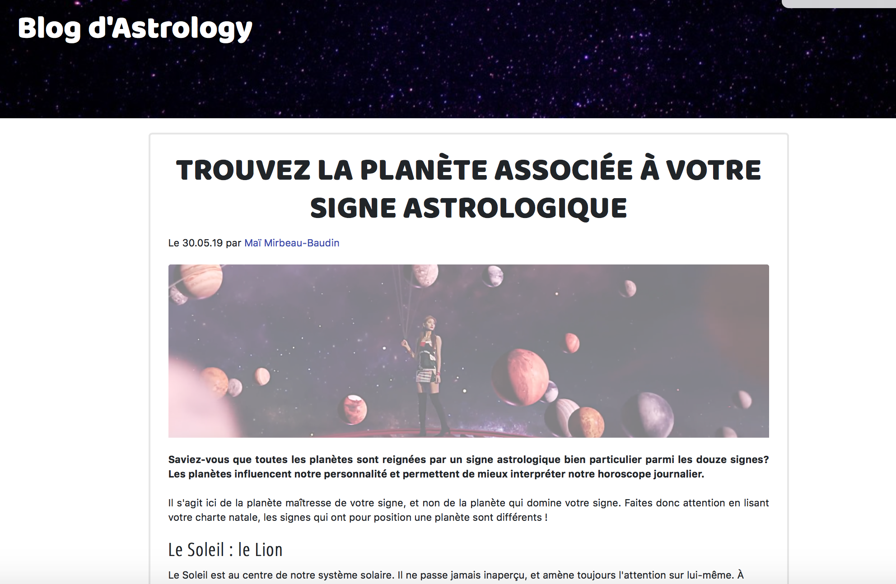Liens du site
Site web
Lien vers le site webGitHub
Lien vers le GitHub du siteLien vers le GitHub de la présentation